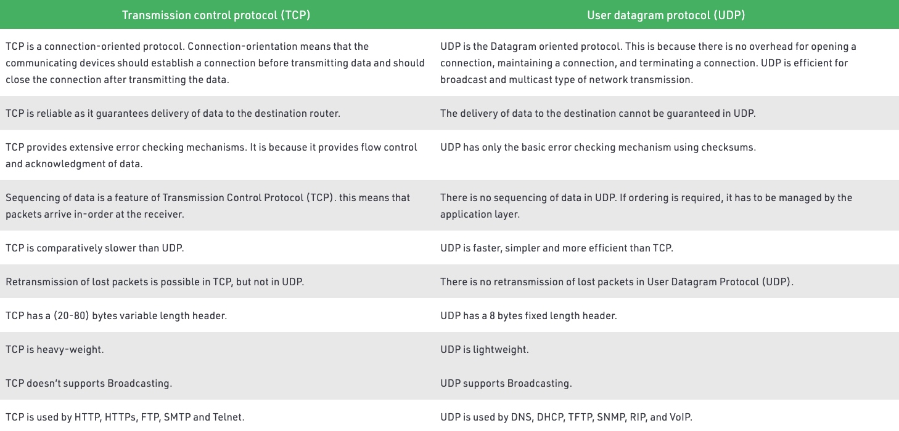

在回答这个问题前，我们首先要了解 TCP 和 UDP。然后，我们关注于：1. TCP 与 UDP 的差异 2. 如果以 UDP 的条件或基础去实现这些差异。
差异性
我直接从网上找了张参考图。

简单归纳下来，我们可以从以下几方面区分差异性：
- 面向连接。TCP 在数据传输前需要建立一个可靠的连接，以数据字节流的形式传输数据。UDP 不需要连接，支持多播，广播，以数据报文的形式在网络中传输。
- 有序接收数据和重传。TCP 能从机制上保证数据到达的顺序，出现丢包时支持重传。UDP 不支持。
- 流量控制和拥塞控制。TCP 在连接的基础上进行点对点通信，发送方可以根据接收方的反馈信息，调整数据流的传输状态。UDP 只管发送。
UDP 实现 TCP
面向连接
TCP 的连接建立是从 “三次握手” 开始，理论上我们也可以模拟这种方式，使用 UDP 发三个包来模拟连接建立。同理，断开连接的 “四次握手”，也可以通过 UDP 发包模拟。
确认与丢包问题
如果接收端收到了数据包，可以做一个确认，发送一个 ACK 给发送端(这个 ACK 参照 TCP)。
如果有的数据包提前到达，接收端可以缓存着。
如果有的数据包丢失，接收方可以设置超时，要求发送端重新发送。超时时间过短（相较RTT），导致过多的重传，超时时间过长，影响传输速度。
顺序问题
所有数据包都有自己的唯一顺序 ID，这部分可能要修改协议头。接收端通过返回 ACK 告诉发送端，“我准备接收某 ID 的数据包”。
流量控制
参照滑动窗口协议，发送端通过 ACK 中夹带的接收端窗口大小，控制自身的发送速率。
会发生死锁吗？
当发送者收到了一个窗口为0的应答，发送者便停止发送，等待接收者的下一个应答。但是如果这个窗口不为0的应答在传输过程丢失，发送者一直等待下去，而接收者以为发送者已经收到该应答，等待接收新数据，这样双方就相互等待，从而产生死锁。
每当发送者收到一个零窗口的应答后就启动该计时器。时间一到便主动发送报文询问接收者的窗口大小。若接收者仍然返回零窗口，则重置该计时器继续等待；若窗口不为0，则表示应答报文丢失了，此时重置发送窗口后开始发送，这样就避免了死锁的产生。
拥塞控制
拥塞控制应对网络异常的场景，包括网络中出现的丢包和超时。
慢启动算法：一开始使用小流量试探网络质量，指数型增加拥塞窗口，避免拥塞。当窗口大小等于阈值时，窗口改为一个一个增加。
拥塞避免算法：当出现超时（拥塞）时，我们及时将窗口大小调整为当前的一半，然后窗口大小开始慢慢增加，如果再次出现超时（拥塞），那么重复之前的操作。
额外功能：
快重传算法：接收端收到失序的数据包时，立即发出重复确认（不要等到自己的发送数据时稍待确认）。而发送端一脸多次收到重复确认时，就立即重传接收端未收到的数据包，而不必等待重传计时器到期。
快恢复算法：当发送端收到多个重复确认时，此时网络可能没有出现拥塞（因为拥塞的话，可能连重复确认都接收不到），但是为了预防网络拥塞，开始采取拥塞避免算法。